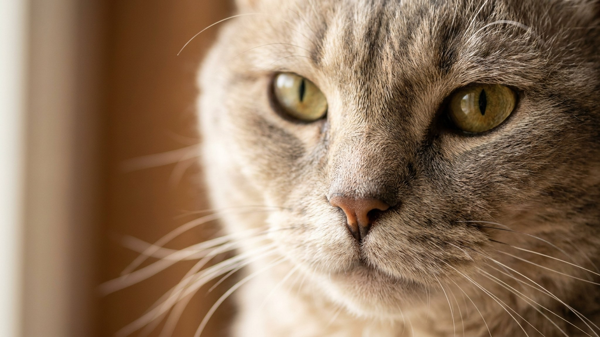

Погладишь — ощущение, будто трогаешь мочалку: шерсть пружинит, слегка колется и не лежит, а торчит завитками. Так выглядит американская жесткошёрстная — единственная кошка в мире, у которой вся шерсть, включая усы и шерсть в ушах, жёсткая от природы. Ниже — откуда взялась эта мутация, каков характер породы и почему сложный груминг, которого все боятся, — это миф.
🐾 Ваш питомец — американская жесткошёрстная?
Заведите профиль в AnimaLife: приложение запомнит породу, возраст и вес и будет подсказывать по уходу именно для неё. Вопросы AI-ветеринару — круглосуточно и бесплатно.
Завести профиль → Завести в MAX →
У вас iPhone? AnimaLife есть в App Store
В 1966 году на ферме в штате Нью-Йорк в обычном помёте домашних кошек родился котёнок с необычно жёсткой, курчавой шерстью. Мутация оказалась спонтанной и не была известна ни в одной другой породе. Заводчики Джоан и Уильям О'Ши сохранили котёнка и начали направленное разведение. Уже в 1967 году CFA признала породу, а к 1978-му выдала полный чемпионский статус.
Жесткошёрстная кошка — не помесь, а результат доминантной мутации единственного гена, не встречающейся нигде в мире. Порода генетически близка к американской короткошёрстной, но внешне узнаётся мгновенно: каждый волосок загнут на конце — как крохотный крючок.
У большинства кошек три типа шерсти: остевой, покровный и пуховый подшёрсток. У американской жесткошёрстной все три видоизменены: волоски тоньше, загнуты и плотнее прижаты. Результат — упругое пружинящее покрытие, жёсткое на ощупь, но не грубое. Усы тоже курчавые и легко ломаются при интенсивном расчёсывании — это важно помнить при уходе.
Жесткошёрстная кошка по темпераменту схожа с американской короткошёрстной: уравновешенная, незлобивая, не истеричная. Она охотно сидит рядом, но не требует постоянного внимания. Не орёт, если её не трогать несколько часов. Хорошо переносит квартирный режим — не рвётся на улицу, не разносит мебель от скуки.
Распространённое заблуждение: раз шерсть курчавая — значит, она требует сложного ухода. На деле всё наоборот. Американская жесткошёрстная кошка почти не нуждается в расчёсывании: структура шерсти не даёт образовываться колтунам, а подшёрсток не выпадает в тех объёмах, что у длинношёрстных пород.
Американская жесткошёрстная — кошка средней активности. Она охотно играет, особенно с дразнилкой или мячиком, но не требует изматывающих сессий. Достаточно 15–20 минут игры вечером. Порода хорошо поддаётся обучению: приходит на зов, осваивает несложные команды, можно научить приносить игрушку.
Хорошо уживается и с тихим одиноким хозяином, и в шумной семье — главное, своё место и предсказуемый распорядок.
Американская жесткошёрстная подойдёт тем, кто хочет спокойного компанейского питомца без сложного груминга. Не капризна в еде, не требует выгула, не устраивает концертов. Достаточно активна и при этом самостоятельна — спокойно переносит занятых хозяев. Порода редкая: питомники в России найти непросто, покупку лучше планировать заранее и только у заводчиков с документами.
🐾 У вас американская жесткошёрстная?
AnimaLife соберёт уход под породу: к каким болезням есть склонность, что проверять по возрасту, чем кормить и когда пора к врачу. Бесплатно, прямо в мессенджере.
Собрать план ухода → Собрать в MAX →
У вас iPhone? AnimaLife есть в App Store
🐾 Понравился разбор?
Подпишитесь на канал — каждый день разбираем по одному тревожному симптому у кошек и собак: что в пределах нормы, а когда пора к врачу. Подпишитесь, чтобы не пропустить разбор, который может спасти здоровье вашего питомца.
Материал носит информационный характер и не заменяет очную консультацию ветеринара.